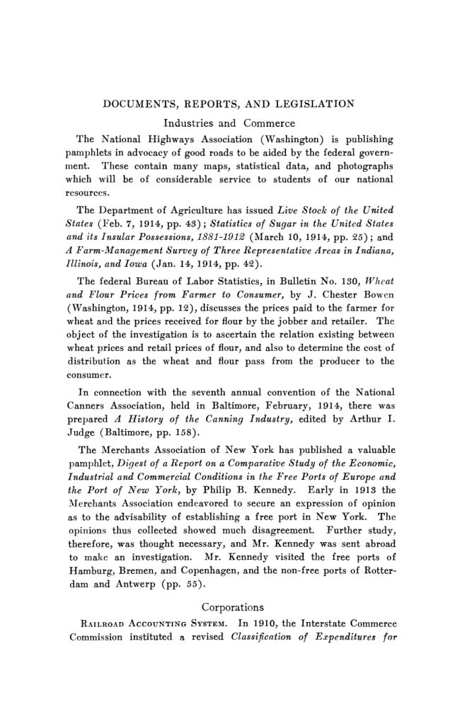

Junho de 1914: uma greve geral e o monopólio alemão do petróleo
Leitura: 13 min
Le Rossignol narra a greve geral neozelandesa, Munro o plano alemão contra a Standard Oil, Swanson os bancos canadenses, Gephart os empréstimos sobre apólices e Brown responde a Fetter.


Na manhã de 22 de outubro de 1913, os estivadores do porto de Wellington pararam por duas horas para discutir a queixa de uma dúzia de carpinteiros navais. Quando voltaram, encontraram outros homens em seus lugares. Em poucas semanas, a disputa virou uma greve geral na Nova Zelândia. J. E. Le Rossignol, da University of Nebraska, conta a história no número de junho de 1914 da American Economic Review.
A edição traz seis artigos. John C. Rose lê os números do censo americano de 1910 sobre a população negra. W. W. Swanson, da Queen's University, discute os lucros e a expansão dos bancos canadenses. Dana G. Munro descreve o projeto alemão de monopólio do querosene. W. F. Gephart, da Washington University, examina os empréstimos sobre apólices de seguro de vida, e Harry G. Brown, de Yale, responde à crítica que Frank A. Fetter lhe fizera em março. Seguem resenhas, documentos, periódicos, a décima primeira lista de teses de doutorado em andamento e notas.
O que o censo de 1910 mostra sobre a população negra?
John C. Rose (Baltimore, Maryland) · “Movements of Negro Population as Shown by Census of 1910” · pp. 281–292
Rose parte do primeiro censo, de 1790, em que a população negra era 19,3% do total. Em 1910, era 10,7%. Antes de interpretar os números, ele discute a qualidade dos dados. Os censos de 1870 e de 1890, diz, foram mal feitos, sobretudo no Sul, e as omissões produziram oscilações aparentes na taxa de crescimento: o de 1890 registrou 13,5% na década, que Rose estima terem sido cerca de 16%, e o de 1900, 18%, que estima terem ficado abaixo de 15%.
Como os estados do Sul não registravam sistematicamente nascimentos e óbitos, Rose recorre à proporção de crianças pequenas na população recenseada. A comparação sugere queda lenta da natalidade e mostra que, quando um censo era mal feito, as crianças muito pequenas estavam entre os mais omitidos.
O artigo descreve então a distribuição regional. Em seis estados contíguos, da Carolina do Sul à Louisiana, a participação da população negra subiu até 1880 e caiu desde então: em 1910, havia 473 negros e 527 brancos em cada mil habitantes, proporção próxima à de cem anos antes. O número de condados de maioria negra caiu de 287, em 1900, para 263, em 1910, com quatro condados novos criados por desmembramento.
Rose registra também deslocamentos para o Norte. Nos antigos estados livres, a população negra cresceu 22,8% na década, o dobro da média nacional, mas ainda era menos de um em cada cinquenta habitantes. Nos estados escravistas ao norte da linha de 36°30', ela ficou praticamente estável e passou de 35% da população em 1820 para menos de um sétimo. Rose associa a concentração herdada da escravidão às áreas de fumo, arroz, algodão e açúcar e conclui que a tendência de 1910 era a dispersão pelo país.
Por que fracassou a greve geral na Nova Zelândia?
J. E. Le Rossignol (University of Nebraska) · “A General Strike in New Zealand” · pp. 293–303
A lei de conciliação e arbitragem industrial de 1894 deu à Nova Zelândia mais de doze anos praticamente sem greves. A greve dos bondes de Auckland, em 14 de novembro de 1906, abriu outra fase. Ainda assim, os sindicatos registrados sob a lei continuavam a crescer: eram 322, com 60.622 membros, em 1912, numa força de trabalho de cerca de 300.000 assalariados.
O núcleo da oposição à lei, diz o autor, era uma minoria de sindicatos não registrados, reunida na federação conhecida como “Red Fed”, próxima dos Industrial Workers of the World e favorável à ação direta. Depois da longa greve das minas de Waihi, em 1912, e de um congresso de unidade que dividiu o movimento em julho de 1913, a nova United Federation of Labour adotou em seus estatutos a greve como arma.
A federação declarava que usaria “a arma da greve, local, geral ou nacional, sempre que as circunstâncias o exigirem”. (“will employ the strike weapon, local, general, or national, whenever the circumstances demand”)
O estopim foi a parada de 22 de outubro no cais de Wellington. Os armadores exigiram um novo acordo registrado sob a lei de arbitragem; a federação recusou. O governo de W. F. Massey convocou policiais especiais, e centenas de agricultores a cavalo foram a Wellington para garantir os cais e trabalhar neles. Em Auckland, a federação decretou greve geral em 10 de novembro.
Le Rossignol cita a estimativa do Evening Post de 16.000 grevistas, contra 71.622 sindicalizados. A greve geral de Auckland terminou em 23 de novembro; a dos marítimos, em 19 de dezembro, e a dos mineiros de Huntly, em janeiro de 1914, com novos sindicatos registrados. Entre as causas do fracasso, o autor aponta a união dos patrões, a firmeza do governo, a reação dos agricultores e a divisão dos trabalhadores. Uma emenda de 15 de dezembro de 1913 passou a exigir aviso, voto secreto e investigação antes de greves de sindicatos não registrados.
Os bancos canadenses lucram demais?
W. W. Swanson (Queen's University) · “Present Problems in Canadian Banking” · pp. 304–314
Swanson examina os problemas do sistema bancário canadense depois da revisão da lei bancária de 1913. O primeiro é a acusação, forte no Oeste, de que os bancos têm lucros excessivos. O Canadian Bank of Commerce lucrou 2,8 milhões de dólares em 1912 sobre um capital de 15 milhões, mais de 18%; incluída a reserva, a base sobe a 27,5 milhões e o retorno cai para pouco mais de 10%, que Swanson considera a medida correta.
No Oeste, a lei fixa em 7% o juro recuperável, mas os empréstimos custam de 8% a 12%. Os banqueiros alegam que operar ali custa, em média, dois pontos a mais. Para Swanson, o problema central é o crédito hipotecário, que a lei proíbe aos bancos. Saskatchewan aprovou uma associação cooperativa de crédito hipotecário inspirada nas Landschaften alemãs: grupos locais de ao menos dez tomadores, responsabilidade solidária limitada a 50% de cada empréstimo, amortização em 15 a 35 anos, empréstimos de até 40% do valor da terra e títulos garantidos pela província.
O artigo trata ainda da expansão externa. No fim de 1912, os bancos canadenses tinham 13 agências na Terra Nova e 62 em outros países, sobretudo Estados Unidos, México, Cuba e Antilhas; o Royal Bank chegou a Cuba em 1899 e tinha 19 agências na ilha. Quanto às fusões, Swanson registra que o Bank of Montreal absorveu três bancos, e o Bank of Commerce, quatro. A lei de 1913 passou a exigir a autorização do ministro das Finanças para a venda de ativos de um banco a outro; o autor considera essa salvaguarda suficiente.
Por que a Alemanha queria um monopólio do querosene?
Dana G. Munro · “The Proposed German Petroleum Monopoly” · pp. 315–331
Munro descreve o projeto do governo alemão de substituir as subsidiárias da Standard Oil por um monopólio sob controle oficial no comércio de petróleo iluminante. O assunto interessava aos Estados Unidos, observa, porque o querosene era uma das principais exportações americanas e a Alemanha, um dos maiores compradores.
A primeira parte conta como a Standard conquistou o mercado. Em 1890, fundou a Deutsch-Amerikanische Petroleum-Gesellschaft, a D. A. P. G., com metade das ações com direito a voto. Seguiu-se uma guerra de preços contra os importadores independentes do Reno, que se renderam em 1896. A Standard eliminou depois os atacadistas, passando a entregar o óleo diretamente aos varejistas em caminhões-tanque e, mais tarde, aos consumidores, em latas. Munro reconhece que isso barateou a distribuição.
Em 1912, o governo apresentou ao Reichstag o projeto de uma empresa privada com monopólio da importação e do atacado por trinta anos, capital de 60 milhões de marcos, maioria de votos de um consórcio de bancos e fiscalização permanente de um comissário do chanceler. Os lucros seriam regulados pelo preço: a 20 pfennigs por litro no reservatório, o dividendo seria de 5%, e o Tesouro receberia até quatro vezes esse valor; com preços mais altos, os dividendos cairiam.
O ponto fraco, para Munro, é a oferta. A Rússia exportou só 475.000 toneladas de querosene em 1911, e seu óleo bruto rende 30% a 35% de querosene, contra 60% a 75% do óleo da Pensilvânia e de Ohio. A Romênia e a Áustria exportavam pouco. Se o monopólio tivesse de comprar da Standard, diz Munro, acabaria como agente de vendas do truste.
Por que o empréstimo sobre a apólice preocupava as seguradoras?
W. F. Gephart (Washington University) · “Loans on Life Insurance Policies” · pp. 332–339
Gephart examina uma prática que se generalizara. As seguradoras começaram a emprestar diretamente sobre as apólices por volta de 1885, como argumento de venda. As leis Armstrong, de Nova York, tornaram o empréstimo obrigatório nas apólices vendidas no estado, e outros estados as seguiram. Os tribunais, ao tratarem o seguro como uma forma de propriedade do segurado, reforçaram essa leitura.
Os dados de uma companhia representativa mostram a evolução de 1904 a 1913. A proporção de apólices com empréstimo em aberto subiu de 6,2% para 15,7%. Entre as apólices resgatadas, a parcela das que tinham empréstimo passou de 16,1% para 38,3%, o que Gephart toma como indício de que os empréstimos levam ao abandono do seguro. A parcela dos empréstimos quitados em dinheiro no ano caiu de 5,1%, em 1903, para 2,9%, em 1913.
Gephart apresenta três objeções. O empréstimo reduz a proteção do beneficiário, que é a razão de ser do seguro de vida. Obriga a companhia a manter fundos líquidos de baixo rendimento ou a vender títulos longos justamente nas crises, quando a procura por empréstimos aumenta. E nega a mutualidade, porque trata a reserva como um fundo individual, quando ela pertence ao grupo. Para ele, o seguro não é instituição de poupança nem de investimento, e sim um meio de assumir e distribuir riscos.
Como medidas imediatas, propõe exigir o consentimento do beneficiário, dar à companhia um prazo de trinta dias para conceder o empréstimo, como fazem as caixas econômicas, e elevar a taxa de juros contratada. Adverte que, num novo período de juros altos, a saída de recursos poderia impor perdas sérias com a venda de títulos.
O valor do capital depende só do desconto?
Harry Gunnison Brown (Yale University) · “The Discount Versus the Cost-of-Production Theory of Capital Valuation” · pp. 340–349
Brown responde a Fetter, que o acusara, no número de março, de raciocinar em círculo: de supor uma taxa de juros para depois explicá-la pela produtividade. Brown diz que trabalhou com quantidades físicas, e não com valores, justamente para evitar a acusação, e que tratou de uma comunidade em que cada pessoa é ao mesmo tempo produtor e consumidor final.
O argumento usa a ilha de Robinson Crusoé. Com o mesmo trabalho, Crusoé pode trazer da ilha vizinha 1.000 frutas ou 10 mudas de árvore que, plantadas, darão 1.100 frutas no ano seguinte. Um espanhol que queira comprar as árvores, por mais baixa que seja sua preferência no tempo, não pagará por elas mais de 1.000 frutas, porque pode buscá-las e plantá-las com o mesmo esforço. Esse limite é o custo de produção das árvores.
Do lado de Crusoé, o raciocínio é simétrico. Com preferência no tempo de 15%, ele não venderia as árvores por menos de 956 frutas; mas, a longo prazo, não as produzirá para venda por menos de 1.000, porque pode obter as frutas diretamente. Como tomador de empréstimo produtivo, aceitará pagar qualquer juro abaixo de 10%, por mais paciente que seja. Brown conclui que o valor do capital reproduzível tem dois determinantes, a preferência no tempo e o custo de produção.
A distinção entre terra e capital, esclarece, é na verdade entre bens reproduzíveis e não reproduzíveis: quadros de velhos mestres e terrenos comerciais de Nova York estão na mesma categoria. Só o valor destes depende apenas do desconto de rendimentos futuros.
Brown aceita o rótulo de eclético e responde que não há “nenhuma virtude especial e nenhuma consistência especial” em explicar um fenômeno por uma causa só. (“no special virtue and no special consistency”)
O que mais há na edição?
As resenhas abrem com The Reconstruction of Economic Theory, de Simon N. Patten, por Jacob H. Hollander, e incluem The Old Colonial System, de George Louis Beer, por Stewart L. Mims; The Granger Movement, de Solon Justus Buck, por B. H. Hibbard; Social Insurance, de I. M. Rubinow, por Robert F. Foerster; e The Operation of the New Bank Act, de Thomas Conway Jr. e Ernest M. Patterson, por William A. Scott. Nos documentos, Irving Fisher completa a equação de trocas de 1913. A décima primeira lista registra as teses de doutorado em economia em andamento, por área. As notas informam que a secretaria da associação passou de Cambridge para Ithaca.
Na minha leitura
Na minha leitura, três artigos da edição tratam do mesmo problema: o que fazer quando um mercado é dominado por um agente. Munro mostra um governo tentando substituir um monopólio privado estrangeiro por outro, regulado, e esbarrando na oferta; Le Rossignol, um sistema de arbitragem compulsória que acaba fortalecido porque os patrões passam a usá-lo; Swanson, a defesa de bancos grandes com a medida do lucro sobre os ativos, e não sobre o capital.
O debate entre Brown e Fetter é a outra metade da edição. Brown mostra que, quando há a opção de produzir o bem, o custo de produção limita o preço do capital, qualquer que seja a preferência no tempo. A divergência com Fetter é sobre a ordem das causas, não sobre a aritmética, e esse tipo de disputa costuma se resolver quando os dois lados explicitam as alternativas disponíveis a cada agente.
Glossário
- Arbitragem compulsória
- sistema neozelandês em que disputas de sindicatos registrados são decididas por um tribunal.
- Sindicato registrado
- sindicato inscrito sob a lei de arbitragem, sujeito às decisões do tribunal.
- Ação direta
- uso da greve e de outras pressões fora dos canais legais, defendido pelos sindicalistas revolucionários.
- Landschaft
- associação alemã de proprietários que emite títulos garantidos por hipotecas de seus membros.
- D. A. P. G.
- Deutsch-Amerikanische Petroleum-Gesellschaft, subsidiária alemã da Standard Oil.
- Reserva da apólice
- valor que a seguradora acumula para pagar os benefícios futuros de um contrato.
- Preferência no tempo
- valor maior atribuído aos bens presentes em relação aos futuros.
Artigos (6)
- Movements of Negro Population as Shown by Census of 1910 — John C. Rose (Baltimore, Maryland) (pp. 281–292) · resenha acima · JSTOR
- A General Strike in New Zealand — J. E. Le Rossignol (University of Nebraska) (pp. 293–303) · resenha acima · JSTOR
- Present Problems in Canadian Banking — W. W. Swanson (Queen's University) (pp. 304–314) · resenha acima · JSTOR
- The Proposed German Petroleum Monopoly — Dana G. Munro (pp. 315–331) · resenha acima · comentário completo · JSTOR
- Loans on Life Insurance Policies — W. F. Gephart (Washington University) (pp. 332–339) · resenha acima · JSTOR
- The Discount Versus the Cost-of-Production Theory of Capital Valuation — Harry Gunnison Brown (Yale University) (pp. 340–349) · resenha acima · comentário completo · JSTOR
Resenhas (34)
- Simon N. Patten, The Reconstruction of Economic Theory — Jacob H. Hollander (pp. 350–351). Ensaio de Patten sobre a reconstrução da teoria econômica. JSTOR
- E. J. Burke, Political Economy. Designed for Use in Catholic Colleges, High Schools and Academies — Herbert E. Mills (pp. 351–354). Manual de economia para escolas católicas. JSTOR
- Arthur Bochard, Les Lois de la Sociologie Économique — Charles A. Ellwood (pp. 354–356). Livro sobre as leis da sociologia econômica. JSTOR
- Rudolph Kobatsch, La Politique Économique Internationale, e Bertrand Nogaro, Éléments d'Économie Politique — Leona M. Powell (pp. 356–358). Tratado de política econômica internacional e manual em dois volumes. JSTOR
- Karl Adler, Kapitalzins und Preisbewegung — Alvin S. Johnson (pp. 358–359). Ensaio sobre juros e movimento de preços, da escola austríaca. JSTOR
- George Louis Beer, The Old Colonial System, 1660–1754, parte I — Stewart L. Mims (pp. 360–362). Dois volumes sobre a formação do sistema colonial inglês. JSTOR
- J. R. H. Moore, An Industrial History of the American People — Guy S. Callender (pp. 362–364). História industrial do povo americano. JSTOR
- L. F. Salzmann, English Industries of the Middle Ages — Dana C. Munro (pp. 364–365). Introdução à história industrial da Inglaterra medieval. JSTOR
- Solon Justus Buck, The Granger Movement — B. H. Hibbard (pp. 368–369). Estudo do movimento agrário dos Grangers, de 1870 a 1880. JSTOR
- Henry D. Harben, The Rural Problem — E. K. Eyerly (pp. 370–371). Primeiro trabalho do departamento de pesquisa da Fabian Society. JSTOR
- Douglas Knoop, Outlines of Railway Economics, e A. M. Sakolski, American Railroad Economics — M. O. Lorenz (pp. 375–377). Dois manuais de economia ferroviária. JSTOR
- Hans Keiler, American Shipping — Avard L. Bishop (pp. 377–378). História e condições econômicas da marinha mercante americana. JSTOR
- B. Nogaro e W. Oualid, L'Évolution du Commerce, du Crédit et des Transports depuis Cent Cinquante Ans — Paul S. Peirce (pp. 382–383). Panorama da evolução do comércio, do crédito e dos transportes. JSTOR
- Hammond V. Hayes, Public Utilities. Their Cost New and Depreciation — Robert H. Whitten (pp. 384–386). Livro sobre custo de reposição e depreciação de serviços públicos. JSTOR
- Dexter S. Kimball, Principles of Industrial Organization — Charles W. Mixter (pp. 386–387). Curso universitário sobre organização industrial. JSTOR
- Ernest Brown Skinner, The Mathematical Theory of Investment — H. L. Rietz (pp. 387–388). Manual de matemática financeira. JSTOR
- Emil Faes, Die Berücksichtigung der Wertverminderungen des stehenden Kapitals in den Jahresbilanzen — Leo Greendlinger (pp. 388–390). Estudo sobre o registro da depreciação nos balanços. JSTOR
- E. Hilton Young, Foreign Companies and Other Corporations — Allyn A. Young (pp. 391–393). Estudo jurídico sobre empresas estrangeiras no direito internacional privado. JSTOR
- Oscar L. Pond, A Treatise on the Law of Public Utilities Operating in Cities and Towns — James E. Boyle (pp. 394–395). Tratado sobre o direito dos serviços públicos urbanos. JSTOR
- G. D. H. Cole, The World of Labour — George E. Barnett (pp. 396–397). Discussão do presente e do futuro do sindicalismo. JSTOR
- J. A. Estey, Revolutionary Syndicalism — R. F. Hoxie (pp. 397–399). Exposição e crítica do sindicalismo revolucionário. JSTOR
- Harry W. Laidler, Boycotts and the Labor Struggle — Leo Wolman (pp. 399–401). Aspectos econômicos e jurídicos do boicote. JSTOR
- Lujo Brentano, Ueber Syndikalismus und Lohnminimum — Henry R. Seager (pp. 401–403). Duas conferências sobre sindicalismo e salário mínimo. JSTOR
- Thomas Conway Jr. e Ernest M. Patterson, The Operation of the New Bank Act — William A. Scott (pp. 405–407). Guia do funcionamento da lei do Federal Reserve. JSTOR
- W. G. Langworthy Taylor, The Credit System — Everett W. Goodhue (pp. 408–410). Tratado evolucionista sobre a origem e a estrutura do crédito. JSTOR
- Gustav Cohn, Betrachtungen über die Finanzreform des Reiches — Charles J. Bullock (pp. 413–414). Ensaios sobre a reforma financeira do Império alemão. JSTOR
- Lent Dayton Upson, Sources of Municipal Revenue in Illinois, e Joel Roscoe Moore, Taxation of Corporations in Illinois — Henry B. Gardner (pp. 414–416). Dois estudos sobre receitas municipais e tributação de empresas em Illinois. JSTOR
- I. M. Rubinow, Social Insurance — Robert F. Foerster (pp. 424–428). Estudo do seguro social com referência às condições americanas. JSTOR
- Karl Kumpmann, Die Reichsarbeitslosenversicherung — W. F. Gephart (pp. 428–429). Estudo sobre o seguro-desemprego nacional na Alemanha. JSTOR
- Willford Isbell King, Exercises in Statistical Method — Robert E. Chaddock (pp. 434–436). Caderno de exercícios de método estatístico. JSTOR
- Franz Zizek, Statistical Averages, trad. de Warren M. Persons — James A. Field (pp. 436–438). Estudo metodológico sobre as médias estatísticas. JSTOR
- Scott Nearing, Financing the Wage-Earner's Family — Frank H. Streightoff (pp. 438–441). Levantamento sobre renda e gasto das famílias assalariadas americanas. JSTOR
- Robert Giffen, Statistics, org. de Henry Higgs e George Udny Yule — H. S. Person (pp. 441–442). Obra póstuma sobre estatística. JSTOR
- Corrado Gini, Variabilità e Mutabilità, e Hugo Forcher, Die statistische Methode als selbständige Wissenschaft — E. B. Wilson (pp. 442–444). Monografia sobre variabilidade e livro sobre o método estatístico. JSTOR
Novos livros (15)
- New Books (teoria e sua história) — redação (pp. 359–360). Lista de lançamentos sobre teoria e sua história, alguns com nota curta. JSTOR
- New Books (história econômica e geografia) — redação (pp. 365–368). Lista de lançamentos sobre história econômica e geografia, alguns com nota curta. JSTOR
- New Books (agricultura, mineração, florestas e pesca) — redação (pp. 371–374). Lista de lançamentos sobre agricultura, mineração, florestas e pesca, alguns com nota curta. JSTOR
- New Books (indústrias de transformação) — redação (pp. 374–375). Lista de lançamentos sobre indústrias de transformação. JSTOR
- New Books (transportes e comunicações) — redação (pp. 379–382). Lista de lançamentos sobre transportes e comunicações, alguns com nota curta. JSTOR
- New Books (comércio e crises comerciais) — redação (pp. 383–384). Lista de lançamentos sobre comércio e crises comerciais, alguns com nota curta. JSTOR
- New Books (contabilidade, negócios, investimentos e bolsas) — redação (pp. 390–391). Lista de lançamentos sobre contabilidade, negócios, investimentos e bolsas, alguns com nota curta. JSTOR
- New Books (capital e organização capitalista) — redação (pp. 395–396). Lista de lançamentos sobre capital e organização capitalista, alguns com nota curta. JSTOR
- New Books (trabalho e organizações trabalhistas) — redação (pp. 403–405). Lista de lançamentos sobre trabalho e organizações trabalhistas, alguns com nota curta. JSTOR
- New Books (moeda, preços, crédito e bancos) — redação (pp. 410–413). Lista de lançamentos sobre moeda, preços, crédito e bancos, alguns com nota curta. JSTOR
- New Books (finanças públicas, tributação e tarifa) — redação (pp. 416–419). Lista de lançamentos sobre finanças públicas, tributação e tarifa, alguns com nota curta. JSTOR
- New Books (população e migração) — redação (pp. 419–421). Lista de lançamentos sobre população e migração. JSTOR
- New Books (problemas sociais e reformas) — redação (pp. 421–424). Lista de lançamentos sobre problemas sociais e reformas, alguns com nota curta. JSTOR
- New Books (seguros e pensões) — redação (pp. 430–431). Lista de lançamentos sobre seguros e pensões, alguns com nota curta. JSTOR
- New Books (socialismo e cooperativas) — redação (pp. 431–434). Lista de lançamentos sobre socialismo e cooperativas, alguns com nota curta. JSTOR
Documentos, periódicos e notas (4)
- Documents, Reports, and Legislation — redação e colaboradores (pp. 445–473). Resumos de documentos oficiais, com textos de A. M. Sakolski, William S. Stevens, C. W. Doten, T. S. Adams e Irving Fisher, entre outros. JSTOR
- Periodicals — redação e colaboradores (pp. 474–523). Resumos de artigos de periódicos americanos e estrangeiros, por área. JSTOR
- Eleventh List of Doctoral Dissertations in Political Economy in Progress in American Universities and Colleges — redação (pp. 524–533). Décima primeira lista de teses de doutorado em economia em andamento nas universidades americanas, organizada por área. JSTOR
- Notes — redação (pp. 534–540). Notas sobre a mudança da secretaria da associação para Ithaca, conferências, cursos e nomeações. JSTOR
Fontes
- Movements of Negro Population as Shown by Census of 1910 (pp. 281–292). JSTOR · Internet Archive (PDF)
- A General Strike in New Zealand (pp. 293–303). JSTOR · Internet Archive (PDF)
- Present Problems in Canadian Banking (pp. 304–314). JSTOR · Internet Archive (PDF)
- The Proposed German Petroleum Monopoly (pp. 315–331). JSTOR · Internet Archive (PDF)
- Loans on Life Insurance Policies (pp. 332–339). JSTOR · Internet Archive (PDF)
- The Discount Versus the Cost-of-Production Theory of Capital Valuation (pp. 340–349). JSTOR · Internet Archive (PDF)
- [untitled] The American Economic Review, (1914-06-01), pages 350-351 (pp. 350–351). JSTOR · Internet Archive (PDF)
- [untitled] The American Economic Review, (1914-06-01), pages 351-354 (pp. 351–354). JSTOR · Internet Archive (PDF)
- [untitled] The American Economic Review, (1914-06-01), pages 354-356 (pp. 354–356). JSTOR · Internet Archive (PDF)
- [untitled] The American Economic Review, (1914-06-01), pages 356-358 (pp. 356–358). JSTOR · Internet Archive (PDF)
- [untitled] The American Economic Review, (1914-06-01), pages 358-359 (pp. 358–359). JSTOR · Internet Archive (PDF)
- New Books (pp. 359–360). JSTOR · Internet Archive (PDF)
- [untitled] The American Economic Review, (1914-06-01), pages 360-362 (pp. 360–362). JSTOR · Internet Archive (PDF)
- [untitled] The American Economic Review, (1914-06-01), pages 362-364 (pp. 362–364). JSTOR · Internet Archive (PDF)
- [untitled] The American Economic Review, (1914-06-01), pages 364-365 (pp. 364–365). JSTOR · Internet Archive (PDF)
- New Books (pp. 365–368). JSTOR · Internet Archive (PDF)
- [untitled] The American Economic Review, (1914-06-01), pages 368-369 (pp. 368–369). JSTOR · Internet Archive (PDF)
- [untitled] The American Economic Review, (1914-06-01), pages 370-371 (pp. 370–371). JSTOR · Internet Archive (PDF)
- New Books (pp. 371–374). JSTOR · Internet Archive (PDF)
- New Books (pp. 374–375). JSTOR · Internet Archive (PDF)
- [untitled] The American Economic Review, (1914-06-01), pages 375-377 (pp. 375–377). JSTOR · Internet Archive (PDF)
- [untitled] The American Economic Review, (1914-06-01), pages 377-378 (pp. 377–378). JSTOR · Internet Archive (PDF)
- New Books (pp. 379–382). JSTOR · Internet Archive (PDF)
- [untitled] The American Economic Review, (1914-06-01), pages 382-383 (pp. 382–383). JSTOR · Internet Archive (PDF)
- New Books (pp. 383–384). JSTOR · Internet Archive (PDF)
- [untitled] The American Economic Review, (1914-06-01), pages 384-386 (pp. 384–386). JSTOR · Internet Archive (PDF)
- [untitled] The American Economic Review, (1914-06-01), pages 386-387 (pp. 386–387). JSTOR · Internet Archive (PDF)
- [untitled] The American Economic Review, (1914-06-01), pages 387-388 (pp. 387–388). JSTOR · Internet Archive (PDF)
- [untitled] The American Economic Review, (1914-06-01), pages 388-390 (pp. 388–390). JSTOR · Internet Archive (PDF)
- New Books (pp. 390–391). JSTOR · Internet Archive (PDF)
- [untitled] The American Economic Review, (1914-06-01), pages 391-393 (pp. 391–393). JSTOR · Internet Archive (PDF)
- [untitled] The American Economic Review, (1914-06-01), pages 394-395 (pp. 394–395). JSTOR · Internet Archive (PDF)
- New Books (pp. 395–396). JSTOR · Internet Archive (PDF)
- [untitled] The American Economic Review, (1914-06-01), pages 396-397 (pp. 396–397). JSTOR · Internet Archive (PDF)
- [untitled] The American Economic Review, (1914-06-01), pages 397-399 (pp. 397–399). JSTOR · Internet Archive (PDF)
- [untitled] The American Economic Review, (1914-06-01), pages 399-401 (pp. 399–401). JSTOR · Internet Archive (PDF)
- [untitled] The American Economic Review, (1914-06-01), pages 401-403 (pp. 401–403). JSTOR · Internet Archive (PDF)
- New Books (pp. 403–405). JSTOR · Internet Archive (PDF)
- [untitled] The American Economic Review, (1914-06-01), pages 405-407 (pp. 405–407). JSTOR · Internet Archive (PDF)
- [untitled] The American Economic Review, (1914-06-01), pages 408-410 (pp. 408–410). JSTOR · Internet Archive (PDF)
- New Books (pp. 410–413). JSTOR · Internet Archive (PDF)
- [untitled] The American Economic Review, (1914-06-01), pages 413-414 (pp. 413–414). JSTOR · Internet Archive (PDF)
- [untitled] The American Economic Review, (1914-06-01), pages 414-416 (pp. 414–416). JSTOR · Internet Archive (PDF)
- New Books (pp. 416–419). JSTOR · Internet Archive (PDF)
- New Books (pp. 419–421). JSTOR · Internet Archive (PDF)
- New Books (pp. 421–424). JSTOR · Internet Archive (PDF)
- [untitled] The American Economic Review, (1914-06-01), pages 424-428 (pp. 424–428). JSTOR · Internet Archive (PDF)
- [untitled] The American Economic Review, (1914-06-01), pages 428-429 (pp. 428–429). JSTOR · Internet Archive (PDF)
- New Books (pp. 430–431). JSTOR · Internet Archive (PDF)
- New Books (pp. 431–434). JSTOR · Internet Archive (PDF)
- [untitled] The American Economic Review, (1914-06-01), pages 434-436 (pp. 434–436). JSTOR · Internet Archive (PDF)
- [untitled] The American Economic Review, (1914-06-01), pages 436-438 (pp. 436–438). JSTOR · Internet Archive (PDF)
- [untitled] The American Economic Review, (1914-06-01), pages 438-441 (pp. 438–441). JSTOR · Internet Archive (PDF)
- [untitled] The American Economic Review, (1914-06-01), pages 441-442 (pp. 441–442). JSTOR · Internet Archive (PDF)
- [untitled] The American Economic Review, (1914-06-01), pages 442-444 (pp. 442–444). JSTOR · Internet Archive (PDF)
- Documents, Reports, and Legislation (pp. 445–473). JSTOR · Internet Archive (PDF)
- Periodicals (pp. 474–523). JSTOR · Internet Archive (PDF)
- Eleventh List of Doctoral Dissertations in Political Economy in progress in American Universities and Colleges (pp. 524–533). JSTOR · Internet Archive (PDF)
- Notes (pp. 534–540). JSTOR · Internet Archive (PDF)
- Sumário da edição no JSTOR: The American Economic Review, vol. 4, nº 2.
Documento em domínio público (EUA, publicado antes de 1931), via JSTOR Early Journal Content e Internet Archive. Resumo e comentário do autor deste site, sem afiliação com a American Economic Association. Encontrou um erro? Escreva: a correção é publicada no próprio texto, com data.
← Nº 129 · Minneapolis, 1913: até onde o governo deve controlar a economia Nº 131 · Setembro de 1914: títulos ferroviários, lucros ocultos e o Panamá →